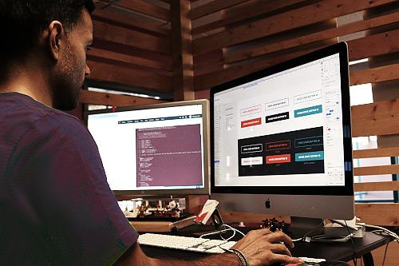

L’agence qui révolutionne le web en Occitanie
Uniweb Toulouse est une agence web, spécialisée dans la création de sites internet et l'amélioration de leur visibilité en ligne. L’entreprise a un engagement fort envers la qualité de leur service et la relation avec ses clients.
Basée au sein du Parc Technologique du Canal de Ramonville, cette entreprise dynamique a été fondée en 2017 par Pierre Prat, un passionné d’informatique depuis son plus jeune âge.
Cet article de la Dépêche nous permet de découvrir son parcours. À 18 ans, il découvre l’importance et la puissance que représente le web pour le développement des entreprises. Il décide donc d’en faire son métier. Après avoir travaillé dans une structure aux méthodes commerciales particulièrement agressives, il fait le choix de créer une agence en accord avec ses valeurs, axée sur la proximité et la satisfaction des clients.
Uniweb Toulouse offre une alternative humaine, basée sur une approche collaborative. L’objectif de l’entreprise est d’établir une relation de confiance avec ses clients, qu’ils soient basés à Toulouse, ou partout ailleurs en France. L’agence croit fermement que les meilleurs résultats sont ceux obtenus grâce à un suivi continu et une communication web efficace. Chaque entreprise peut ainsi faire part de ses propres enjeux et objectifs pour recevoir un service le plus adapté possible.
L’agence offre des services de qualité, qui couvrent un large éventail de services. De la conception et du développement de sites internet, à la mise en œuvre de techniques de webmarketing pour les rendre plus attractifs. Son expertise saura être utile aux petites entreprises comme aux plus grands groupes. Outre la création web sur mesure, l’entreprise offre également des services de référencements naturels (SEO) ou de référencements payants (SEA). Uniweb Toulouse s’adapte à chaque projet, fournissant des solutions personnalisées et performantes.
Depuis ses débuts, Uniweb Toulouse s’est imposée comme un acteur incontournable dans le monde digital. L’agence a connu un tel succès, et convaincu tellement d’entreprises, qu’elle a même ouvert une antenne à Paris, en 2023.
Moderne et innovante, Uniweb Toulouse est une entreprise de qualité. Son équipe engagée et ses valeurs centrées sur la proximité et la satisfaction des clients en font une valeur sûre, à Toulouse comme ailleurs.